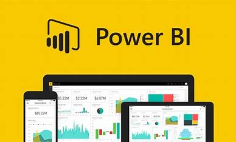

Microsoft PowerBi

Empowering Data-Driven Decisions with Microsoft Power BI
What is Microsoft Power BI?:Microsoft Power BI is a business intelligence and data visualization tool that allows users to connect to various data sources, transform raw data into meaningful insights, and create interactive and shareable reports and dashboards. It's designed to help organizations make data-driven decisions, identify trends, and gain a competitive edge.
Key Features of Power BI::
Data Connectivity:: Power BI offers seamless connectivity to a wide range of data sources, including databases, cloud services, spreadsheets, and more. This enables users to access and consolidate data from various platforms.
Data Transformation: With Power Query, users can transform, clean, and shape data to make it suitable for analysis. This feature streamlines the data preparation process.
Data Modeling: Power BI's Data Model allows users to create relationships between tables and build complex data structures for more in-depth analysis.
Data Visualization:The tool provides a vast library of visualizations, including charts, graphs, maps, and tables, to present data in a visually appealing and understandable manner.
Natural Language Queries:Users can ask questions in plain English and receive relevant visualizations, thanks to Power BI's natural language processing capabilities.
Customization: Power BI allows users to customize reports and dashboards to match their organization's branding, ensuring a consistent and professional look.
Real-Time Data: Users can access real-time data and receive updates as soon as new information becomes available.
ConclusionMicrosoft Power BI has become an indispensable tool for organizations seeking to leverage their data for better decision-making. Its user-friendly interface, powerful data transformation capabilities, and stunning visualizations make it a top choice for businesses of all sizes and industries. With Power BI, organizations can unlock the true potential of their data, gaining a competitive advantage and driving success in today's data-driven landscape.